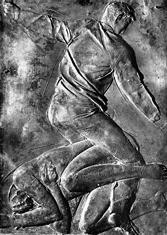
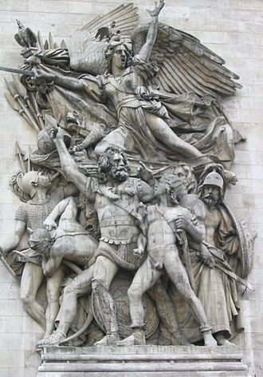
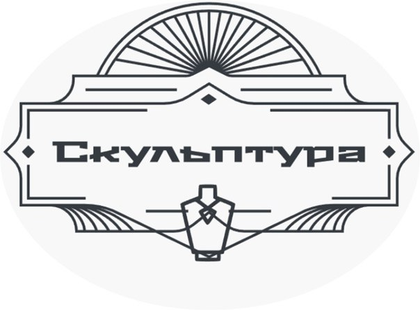

РЕЛЬЕФ (фр. relief, от лат. relevare– приподнимать) – один из видов скульптуры. В отличие от круглой скульптуры, которую можно обойти со всех сторон, рельеф располагается на плоскости и рассчитан в основном на фронтальное восприятие. Рельеф может иметь самостоятельное станковое значение и являться частью архитектурного или скульптурного произведения. Рельеф может выступать над плоскостью фона и углубляться в него.
В зависимости от того, насколько объемно изображены фигуры, насколько они связаны с фоном, выделяют три вида рельефа: барельеф, горельеф и контррельеф.
Барельефом называют низкий, достаточно плоский рельеф, в котором фигуры отступают от плоскости фона меньше чем наполовину, Как правило, барельеф выступает компонентом архитектурного сооружения и играет в нем декоративную и повествовательную роль.
Появление барельефа предшествовало круглой скульптуре. Условные изображения медведей и бизонов, высеченные на скальной поверхности, можно найти в пещерах доисторических людей, живших в ледниковый период. Орнаментальными рельефными мотивами украшены все дошедшие до нас культовые сооружения глубокой древности. Величественные храмы эпохи фараонов целиком покрыты рельефными изображениями, которые, словно страницы рассчитанной на вечность книги, повествуют о происхождении и деяниях египетских богов.
Барельеф используется на монетах и медалях.

Джакомо Манцу. «Смерть Авеля» Врата смерти
В горельефе в отличие от барельефа, скульптурное изображение значительно отступает от фона или дается почти в полный объем. В горельефе фигуры кажутся очень выпуклыми, почти округлыми. Иногда они выглядят как статуи, приставленные к плоскости гладкого фона. Горельеф особенно чувствителен к освещению. При ярком, особенно боковом, свете объемные фигуры отбрасывают сильные тени, которые словно «борются» со светом, обозначая все изгибы пластической формы, подчеркивая мелкие детали.

Ф. Рюд. Горельеф «Марсельеза». 1792. Триумфальная арка на Площади Звезды в Париже
Углубленный рельеф (контррельеф) менее распространен, чем выпуклый рельеф. Изображение такого типа не выступает над фоном, а, наоборот, уходит вглубь. Больше всего такой рельеф напоминает строгий рисунок: контуры изображения словно вырезаны скульптором на поверхности камня. Фигуры и предметы остаются плоскими. Эта разновидность рельефа часто встречается в искусстве древних египтян. Могучие колонны древнеегипетских храмов снизу доверху покрыты таким скульптурным «рисунком».
Контррельеф древнего Египта
